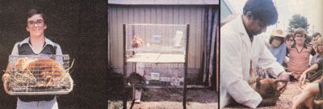

MOTHER feels strongly that youths can be creative "doers", working toward more ecological and self-reliant lifestyles .. . whether their tasks be raising chickens on a farm or maintaining rooftop container gardens in the city. To support the endeavors of our often overlooked "underage" citizens, we're glad to publish well-written articles from younger children and teenagers concerning projects they've undertaken. However, we recommend that all young authors query (that is, send us a letter telling about the story you'd like to do) before writing a full article. Address inquiries to Mother's Children, THE Mother Earth News (restricted) ", P.O. Box 70, Hendersonville, North Carolina 28791.
One day while we were riding home from town in our pickup truck, my mother caught me by surprise by asking, "Steve, how would you like to raise rabbits?"
Since my sister had been keeping horses for several years and my brother had just started a dog kennel, the idea really appealed to me. After all, I was the only one in my family who didn't have something to raise and lavish attention on. Besides, I figured that having a few hutches of bunnies would give me a chance to stretch my allowance (which never seemed to go far enough). I've always hated asking my parents for extra money, and I hoped my rabbits would bring in enough cash so all I'd ever have to ask my folks for would be a ride to the bank!
I've been keeping the critters now for two of my 13 years. During that time, I've really learned a lot . . . and I'd like to share some of what I've discovered with you. (When I was starting out, I made some shameful mistakes . . . I'll tell you about them, too.) So read on . . . maybe you'll decide that you want to raise rabbits.
KNOW WHAT YOU WANT
One of the hardest things about getting started in rabbitry is deciding what kind of bunnies to raise. There are 30-odd American breeds, so you'll have to do some research before you choose. Once you know what type you're interested in, study up on that variety until you can recite its characteristics in your sleep. (Also, be sure to check at your county courthouse or police station to discover whether keeping rabbits is against local zoning laws.)
Make sure the kind of bunny you decide on will be comfortable in your area's climate. Florida, for instance, might not be a cool place (ouch!) to raise woolly Angora rabbits. Find out if the breed you like is good for whatever use you'll want to put it to. Some types of bunnies, like Belgian hares, are suitable only for show. Others, like New Zealand Whites, are excellent for meat or show.
It's also a good idea to get a breed that's fairly common in your area . . . but not one that's too common. If the kind you're considering is too popular, you may have a hard time selling the offspring. But if you end up being your region's sole breeder of some exotic variety, you'll have trouble getting stud service or buying new stock.
When I started looking into rabbit keeping, I wanted to raise New Zealand Whites ... but then I went to my first rabbit show and couldn't believe how many New Zealand Whites were on the judging table. I quickly changed my mind and decided on California bunnies . . . but soon I discovered that those rabbits were almost as popular as New Zealands. Finally, I saw my first Red Satins. I decided right away that they were for me, and they've been my favorites ever since.
I made one other mistake in the beginning, too . . . I didn't get the best rabbits possible. It's necessary to be sharp when you're buying bunnies. Most sellers are helpful, but there're always a few who see beginners as people to unload poor animals (culls) on. I was taken by a guy like that. He sold me two rabbits that were brother and sister. Because breeding close relatives tends to magnify have bad characteristics (such as buck teeth), I couldn't mate my first two rabbits.
Once I realized what I'd gotten stuck with, I was really embarrassed. Fortunately, though, I was able to sell my male and purchase a new one.
CHECK THE PEDIGREE
I could have avoided that error if I'd looked at the family tree, or pedigree, of my rabbits before I bought them. To check for inbreeding, just read the number tattooed in the bunny's right ear and see if any ancestor listed in the nosetwitcher's papers (or those of the rabbit you're planning to mate with your animal) had the same ear number. Also check to make sure all the spaces on the animal's pedigree form are filled in . . . a blank can mean that the rabbit has a completely different breed in its bloodline.
BUY OR BUILD THE RIGHT KIND OF CAGES
Unless you have puh-lenty of time and patience, make sure that your rabbit cages are kept off the ground and have wire floors and sides. I'm speaking from experience, because-back when I was about seven-my parents brought two pet bunnies home. We kept them on the ground in a hutch that had a solid wood floor . . . and that cage had to be emptied of manure every day, or else the inhabitants would get sick.
An elevated cage, made of sturdy welded wire, lets any "bunny buttons" pass right through the bottom to a tray (or the ground) underneath, so you don't need to clean the droppings nearly as often. Besides, emptying a tray-or even shoveling a pile out from under a cage-is one heckuva lot easier than getting down on your hands and knees to clean out a hutch with a small wooden trowel.
My rabbits' cages measure 16" long, 30" wide, and 32" high. If you raise giant bunnies, though (12 pounds and over), their cages should be about 18" X 30" X 48" . Use store-bought boards for the framing, not scrap, because ear mites and lice sometimes inhabit secondhand lumber. And give all the wooden parts a good coat of waterproof stain.
When you move your "little people of the forest" into their new homes, put a good-sized board in each pen. The animals will be able to sit comfortably on the planks and give their feet a rest from the wire floor.
GIVE THEM A BALANCED DIET
Most rabbit rations sold at feed stores and granaries are scientifically balanced to give the animals all the nutrients they need, but you may have a problem deciding how much your bunnies should have. The best way I know to figure that out is called "hand feeding". Give the long-ears a lot of food one morning, and then check the next morning to see how much is missing. Do that for two more days . . . figure out the average amount the rabbits ate each day . . . and limit their daily feed to that average ration from then on.
The best feeders are the ones that allow the eats to be put in through a top opening and come out into a bottom tray. It's easy to wire these to the side of a pen Small cans are no good for holding food, because they're too easy to tip over.
Don't use little cans for waterers, either. I've found the storebought models that attach to the side of a cage are best. These have a spout that sticks outside the cage for easy refilling. You can just pour water down the spout . . . or wire a clean dish-soap bottle, filled with water, upside down over the spout. Whatever system you use, make sure your rabbits always have all the water they want.
BREED WITH CARE
You'll have to be careful which bucks (males) you breed your does (females) to. The first time my doe was bred, the buck had just gotten over a cold. The guy was so weak that his "wife" didn't kindle (give birth). Never let that happen. Make sure the buck you use is healthy.
The second time I bred my doe, I used a buck at a rabbit show. The man who owned the father asked for the best baby of the litter as a stud fee. To make sure he'd collect his payment, the owner wouldn't give me a copy of the buck's pedigree for my records until after the litter was born and I paid up. (Unfortunately, I lost the man's name and address, and I had a hard time tracking him down.)
The gestation period (pregnancy) of a doe is 30-32 days. About a week and a half before the blessed event is expected to happen, put a nesting box-lined with some straw or hay-in the rabbit pen. The baby bed should be big enough to give the expectant mother plenty of elbow room, but not too spacious. You can buy a metal nest box or just get plans from some other breeder and build one your- you do make-your aw";R -U' sure to use good hardwood and secure the sides with glue and thin nails.
Keep the mother-to-be on her regular rations until she kindles Don't worry if the doe loses her appetite when the birth date gets close, but as soon as she starts eating again after kindling, be certain to give her all the feed she wants and continue to let her have as much as she can eat . . . until her children move out.
The youngsters'll be ready to be on their own at eight weeks of age. (They'll start to nibble on solid food when they reach four weeks of age.) If you don't have enough room (or money! to give each little animal its own cage, the young bucks can be put into one pen and the new does can stay with their mama . . . at least for a while. (That's what I had to do.)
JOIN 4-H OR ARBA
A good 4-H club can teach you more about raising rabbits than any article can. Feeding amounts, cage designs, and ways to check for disease can all be learned at a 4-H club.
By the way, are there any adults out there who think 4-H is just for youngsters? I hope not . . . because there are several grown-ups in my club, and they learn just as much as the young people do.
The American Rabbit Breeders Association can also be a big help. When you join it, you'll receive the ARBA yearbook, a year's subscription to the periodical Domestic Rabbits, and The Official Guide to Raising Rabbits. This guidebook is a real encyclopedia of information. I have a copy and I've used it many times.
To join ARBA just send your name, address, and membership dues to Eddie Peifer, Secretary, American Rabbit Breeders Association, Dept. TMEN, P.O. Box 426, Bloomington, Illinois 61701. The standard membership costs $10 per person, but a married couple can join for $13 . . . and anyone aged 9 to 18 can get in for only $5.00. If you have a name for your hutch setup (mine's the Bunny-Hop Rabbitry), send that in, too.
SHOW YOUR BEST RABBITS
It's fun to "gamble" with your rabbits by entering shows. When you do, you get a judge's opinion of your animals . . . the fun of competing against other breeders . . . and maybe a ribbon, rosette, trophy, or leg (which is one step toward a championship). The gettogethers are good places to buy, sell, or breed pedigreed stock, too.
You can also market your rabbits (mostly as pets) at fairs. If you do, try to be there all day on the last day . . . especially near closing time, when stock can be taken home (animals have to stay at the fair through the final day for exhibition purposes). At this point, rabbits usually sell like wildfire!
MONEY AND BUNNIES
When I first got interested in rabbit raising, I figured I'd order my animals and supplies from an advertised rabbitry that offered everything from cages to advice. After adding up all the items I wanted to buy from the company, though, I found that I'd amassed a start-up cost of $250! Fortunately, I joined a 4-H club before filling out any order blanks . . . because I learned-through 4-H-how to start my rabbitry for only around $90 in seed money! (My expenses came to $80.68 for wire, wood, waterers, feeders, and feed. My first pair of bunnies cost $10.)
Being able to start any animal-rearing project for only $90 is a good deal. I know. Remember, my brother and sister raised animals, so I was used to hearing them talk about asking prices of $600 to $1,000 for a good horse and up to $150 for a German Shepherd pup.
I currently own seven bunnies. They need about three 50-pound bags of feed per month, which cost me $22.50. And I make back most of my expenses by selling animals at shows and fairs.
You know, my mom got me started with rabbits . . . she thought of the idea, gave me encouragement, and helped finance me. But I'm almost able to make it on my own now, and I'm getting along fine!
BREEDS FOR BEGINNERS
Here are some of the most popular breeds of rabbits. I've listed the various types under the categories of "pet", "meat", "show", and "fur" animals . . . but you should know that there are judging contests for all kinds of purebred rabbits.
PETS: Netherland Dwarf and Dutch (3-1/2 to 5-1/2 pounds . . . a range of colors).
MEAT: New Zealand (11 pounds . . . black, red, or white), Californian (9 pounds . . . white with black markings), Satin (11 pounds . . . a range of colors), and Himalayan (2 to 5 pounds . . . resemble Californian).
SHOW: Flemish Giant (13 pounds .. . a range of colors), Chinchilla (10 pounds . . . gray), American Checkered Giant (12 pounds . . . white with blue checks), and Lops (9-1/2 pounds . . . gray).
FUR: Angora (6 to 7 pounds . . . a range of colors), Champagne d'Argent (10 pounds . . . silverish), Creme d'Argent (10 pounds . . . white), Chinchilla, and Satin.
|
 CENTER: Elevated wire hutches keep my bunnies healthy. LEFT: Ready for traveling! RIGHT: My rabbit is being judged at a show. |
|
|